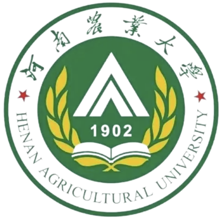

Shiwen Ni (倪仕文)

I am now an Assistant Professor/Postdoc in Shenzhen Institute of Advanced Technology (SIAT), Chinese Academy of Sciences. I received my Ph.D. degree from Department of Computer Science and Information Engineering, National Cheng Kung University. I was selected as an honorary member of the Phi Tau Phi Scholastic Honor Society in 2023.
My research interest includes (but is not limited to) Deep Learning、Natural Language Processing、Large Language Model and AI for Science.
For a full list of publications and citation counts, visit my Google Scholar page.
You can contact me via email: sw.ni@siat.ac.cn.
Work
-
 Shenzhen Institute of Advanced Technology, Chinese Academy of Sciences, Assistant Professor/Postdoc, 2023.02~Present
Shenzhen Institute of Advanced Technology, Chinese Academy of Sciences, Assistant Professor/Postdoc, 2023.02~Present
Education
-
 National Cheng Kung University, Computer Science and Information Engineering, Doctor of Engineering, 2019.09~2022.12
National Cheng Kung University, Computer Science and Information Engineering, Doctor of Engineering, 2019.09~2022.12
-
Wuhan University, Mechanical Engineering, Master of Engineering, 2017.09~2019.06
-
 Henan Agricultural University, Mechanical Design Manufacturing and Automation, bachelor of Engineering, 2013.09~2017.06
Service
-
(Technical) program committee of EMNLP 2023 --Industry Track, ECML-PKDD 2023, AACIP 2023, AFccT 2023, AICS 2022 2023 2024, CNIOT 2022 2023.
-
Reviewer of Information Processing and Management, CAAI Transactions on Intelligence Technolog, Journal of Web Engineering, ACL ARR 2023 2024, COLING 2024, NeurIPS 2023, EMNLP 2023, ICASSP 2023 2024, IJCAI 2022 2023, KDD 2022, AAMAS 2022, CIKM 2022, PAKDD 2022, ICTAI 2021, etc.
Publication
2020 ~ now
-
Shiwen Ni, Minghuan Tan, Yuelin Bai, Fuqiang Niu, Min Yang*, Bowen Zhang*, Ruifeng Xu, Xiaojun Chen, Chengming Li, Xiping Hu, Ye Li, Jianping FanMoZIP: A Multilingual Benchmark to Evaluate Large Language Models in Intellectual Property, LREC-COLING 2024.
-
Shiwen Ni, Min Yang*, Ruifeng Xu, Chengming Li, Xiping Hu. Layer-wise Regularized Dropout for Neural Language Models, LREC-COLING 2024.
-
Shiwen Ni, Jiawen Li, Min Yang, Hung-Yu Kao*. DropAttack: A Random Dropped Weight Attack Adversarial Training for Natural Language Understanding, IEEE/ACM Transactions on Audio, Speech and Language Processing, 2023.
-
Shiwen Ni, Hung-Yu Kao*. KPT++: Refined Knowledgeable Prompt Tuning for Few-shot Text Classification, Knowledge-Based Systems, 2023.
-
Shiwen Ni, Hung-Yu Kao*. Masked Siamese Prompt Tuning for Few-Shot Natural Language Understanding. IEEE Transactions on Artificial Intelligence, 2023.
-
Jiawen Li, Ronghui Li, Shiwen Ni, Hung-Yu Kao*. EPRD: Exploiting prior knowledge for evidence-providing automatic rumor detection, Neurocomputing, 2023.
-
Shiwen Ni, Jiawen Li, Hung-Yu Kao*. R-AT: Regularized Adversarial Training for Natural Language Understanding, EMNLP 2022.
-
Shiwen Ni, Jiawen Li, Hung-Yu Kao*. True or False: Does the Deep Learning Model Learn to Detect Rumors? TAAI 2021.
-
Jiawen Li, Shiwen Ni, Hung-Yu Kao*. Meet The Truth: Leverage Objective Facts and Subjective Views for Interpretable Rumor Detection, ACL-IJCNLP 2021.
-
Shiwen Ni, Jiawen Li, Hung-Yu Kao*. MVAN: Multi-View Attention Networks for Fake News Detection on Social Media, IEEE ACCESS, 2021.
-
Shiwen Ni, Hung-Yu Kao*. PSForest: Improving Deep Forest via Feature Pooling and Error Screening, ACML 2020.
Recent Projects
-
基于多智能体协同策略的大语言模型生成幻觉优化和评价方法研究，广东省省市联合基金（粤深）-青年基金项目，10w，2023/09-2026/09
-
基于多模态人工智能大模型的可解释网络谣言检测方法研究，广东省自然科学基金-面上项目，15w，2024/01-2026/12
-
基于多智能检索增强的大语言模型生成幻觉优化和评价方法研究，2023年国家资助博士后研究人员计划（C档），24w，2年
-
深圳市联合信息技术有限公司-中国科学院深圳先进技术研究院-教育人工智能联合实验室，横向项目，100w，2023/09-2026-09